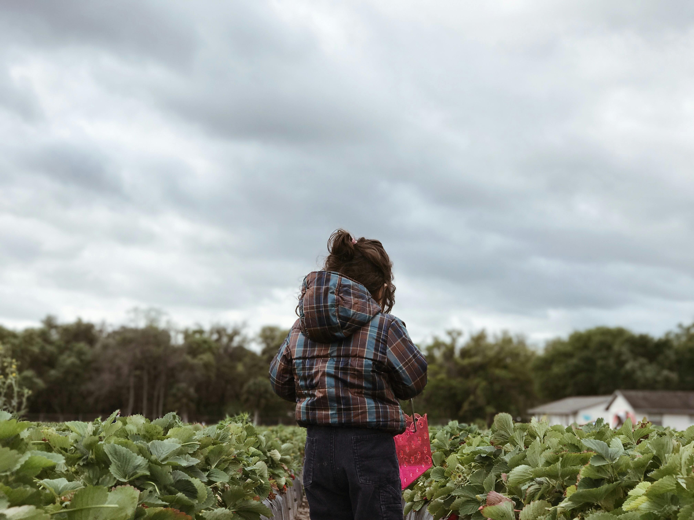

Continental Breakfast
Welcome to the Continental Breakfast homepage. Explore the continents through the navigation menu above.
Welcome to the Continental Breakfast homepage. Explore the continents through the navigation menu above.
European culture is a rich blend of historical legacies, diverse languages, and artistic traditions, shaped by centuries of innovation and exchange. It reflects a deep connection to philosophy, science, and the arts, alongside a strong emphasis on regional identities and shared heritage.
Select a dropdown to learn more about North America's Culture!
The history of North American indigenous cultures is deeply intertwined with the continent's geography. Early populations are believed to have migrated from Siberia via the Bering Strait, spreading throughout what is now the United States, Mexico, and Central America. Indigenous peoples in Central America, such as the Olmec and Maya, are credited with developing the first cities in the Americas. These cultures built impressive urban centers like Tenochtitlan, Texcoco, and Tlacopan, which featured sophisticated engineering, including canals, apartment buildings, and irrigation systems. The urbanization of these civilizations marked a significant leap forward in societal organization and technology.

The Maya, in particular, were advanced in mathematics, astronomy, and agriculture. They created highly accurate calendars and almanacs that recorded celestial events, such as eclipses, and also tracked seasonal changes. The Maya were the first to develop a written symbol for zero, a crucial mathematical concept. The agricultural practices of many indigenous groups, including the Maya, were also key to the growth of their societies. By cultivating crops like corn, squash, and beans, they were able to establish stable food sources, freeing some members of the community to pursue specialized roles in engineering, art, and governance. Other major North American civilizations, such as the Aztec and Iroquois, similarly flourished through agricultural advancements.
In contrast to the urban-based civilizations of the south, the vast northern regions of North America encouraged nomadic lifestyles. Indigenous cultures in these areas, such as the Plains Indians (Lakota, Blackfoot, and Nez Perce), did not build cities but instead followed the migration patterns of the American bison, which provided food, clothing, and materials for tools and shelter. The extinction of the bison, however, weakened these communities significantly. Additionally, cultures like the Inuit in the Arctic developed unique spiritual beliefs tied to their environment. They believed that the aurora borealis represented the souls of ancestors and spirits guiding them in their daily lives. Their respect for nature and the interconnectedness of all living things formed the foundation of their societal structure, helping to maintain balance within their communities.
Contemporary North American societies are deeply shaped by the continent's abundant and diverse natural resources, which play a central role in the economy. Resource extraction, development, and trade are integral to both local communities and national economies. Countries like Guatemala and Costa Rica highlight how local populations integrate natural resources into their economies, with traditional medicine systems in Guatemala utilizing medicinal plants, and Costa Rica promoting sustainable coffee growing for an international market. These practices reflect a balance between utilizing the environment and maintaining sustainable, community-based industries, which have become increasingly important in a globalized world.
Tourism is another major economic driver in contemporary North America, particularly in the Caribbean region, where pristine tropical environments attract millions of visitors each year. The Caribbean’s coral reefs, one of the world’s premier diving destinations, draw approximately 20 million tourists annually. In response to environmental concerns, there is a growing movement towards sustainable tourism, which emphasizes the importance of local businesses and ecosystems over large multinational hotel chains. The Caribbean Alliance for Sustainable Tourism, for example, advocates for the responsible management of natural resources, and ecotourism promotes travel to natural destinations with minimal environmental impact, ensuring that tourism benefits local communities without compromising the region’s natural beauty.
North America's multicultural history is another defining characteristic of its contemporary culture. For centuries, immigrants from across Europe, Asia, Africa, and South America have shaped the continent, contributing to its scientific, business, and cultural achievements. Ethnic neighborhoods in cities like Miami, Minneapolis, Toronto, and Montreal reflect the diversity of immigrant communities, with areas like Little Havana and Little Mogadishu serving as cultural hubs for Cuban and Somali populations. Many immigrants to North America are refugees fleeing persecution, violence, or natural disasters in their home countries. As these diverse communities settle in the region, they bring with them a rich array of traditions, which are celebrated in festivals and cultural events, underscoring North America's role as a vibrant mosaic of global cultures.
North America's food culture is deeply rooted in the agricultural innovations of its Indigenous peoples, whose contributions have shaped diets around the world. About 60% of today’s global diet derives from foods native to the Americas, including staples like potatoes, tomatoes, corn, and chocolate. Native peoples cultivated more than 300 food crops long before European colonization, demonstrating remarkable skill in plant breeding and adaptation. For example, Indigenous communities near the U.S.-Canadian border developed a variety of corn that matured within 60 days to thrive in short growing seasons. Their advanced farming techniques laid the foundation for modern agriculture.
The ingenuity of Native American agricultural practices is further exemplified by the "three sisters" planting technique, which grows corn, beans, and squash together in a mutually beneficial system. Corn provides a natural trellis for beans, which enrich the soil with nitrogen, while squash shades the ground, protecting the roots and preserving moisture. This symbiotic relationship highlights the ecological understanding of Indigenous farmers. Many foods they cultivated, like squash and beans, remain vital components of contemporary cuisines across the Americas. Moreover, the Maya and Aztec civilizations introduced cacao as a source of both nourishment and currency, and their techniques for processing chocolate remain influential today.

Beyond crops, Indigenous communities developed unique culinary methods and ingredients. The Maya were the first to refine cacao into chocolate through fermentation, drying, and roasting. Spirulina, a protein-rich algae harvested by the Aztecs, was a dietary staple and is now widely marketed as a health supplement. Additionally, the Inka's innovative freeze-drying method for potatoes, known as chuño, enabled long-term food storage and continues to be a staple in Bolivian and Peruvian cuisine. These diverse food practices not only reflect the adaptability of Indigenous peoples but also their enduring influence on global culinary traditions.